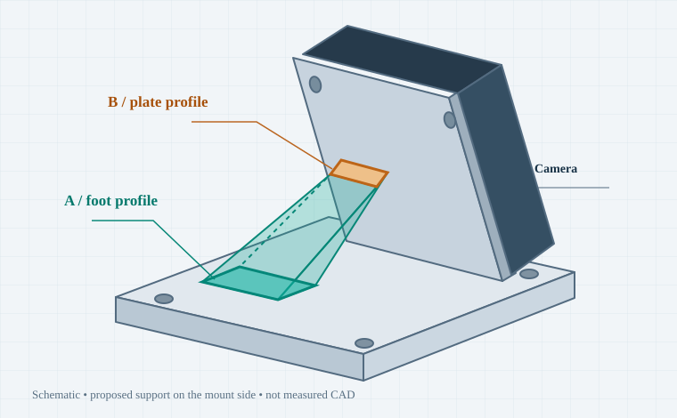
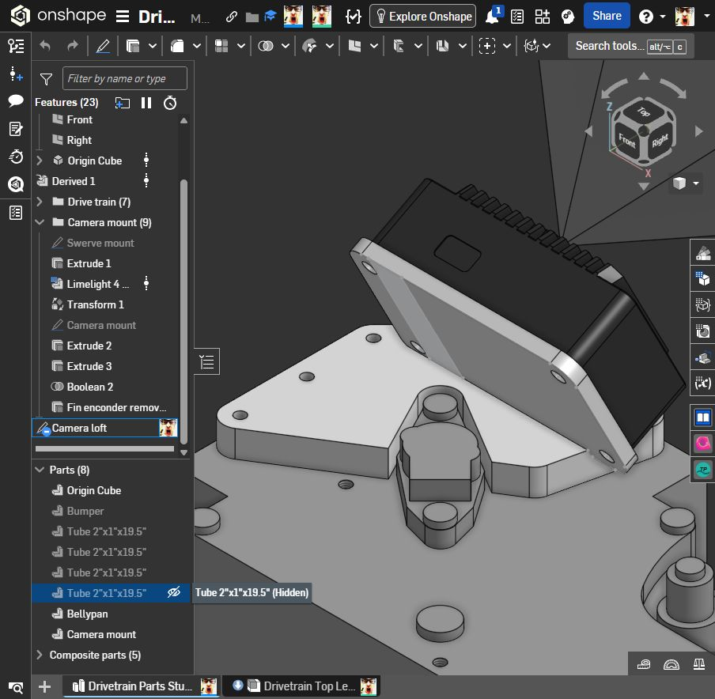

Loft your camera mount.
Blend a footprint on the base into a smaller profile on the tilted camera plate. A loft builds the material between them.

Inside your actual document
I inspected Drivetrain → Drivetrain Parts Studio on October 29, 2026. These are live document references; the colored teaching diagrams are schematic.

Find the correct items
- Camera mount (9) is a feature folder.
- Camera mount under Parts is the solid to merge into.
- Camera loft is currently a sketch, not a Loft feature.
Reuse your starting sketch
Its sketch plane is Face of Extrude 3. Inspect its closed regions before reusing it as profile B. The name alone does not create a loft.
The sketch is under-defined. A closed under-defined sketch can still loft; dimensions and constraints make it more reliable.
A reinforcing transition on the mount side of the plate. Hide the camera to find that side. Pick a clear area away from screws, fins, connectors, and the swerve hardware.
The sections can change shape and angle.
Extrude
Pushes one profile in a straight direction. Good when the cross-section stays the same.
Loft
Transitions between profiles. Useful here because the foot and plate face different directions.
Sweep
Carries a profile along a path. Useful for a tube or cable route.